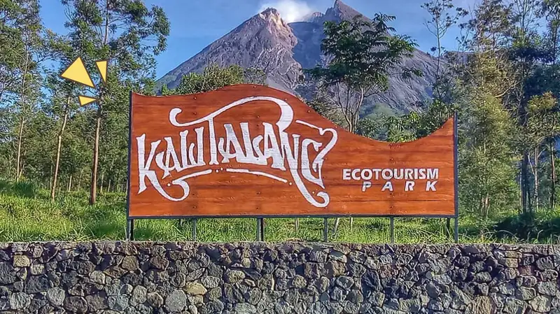

Desa Balerante merupakan salah satu desa di Kecamatan Kemalang, Kabupaten Klaten, Provinsi Jawa Tengah. Desa ini secara geografis terdiri dari wilayah yang mayoritas adalah lahan pertanian dan pemukiman masyarakat, dengan pemandangan yang asri dan kondisi lingkungan yang mendukung aktivitas agraris. Secara administratif, Desa Balerante memiliki beberapa 17 Rukun Tetangga (RT) dan 6 Rukun Warga (RW) yang menjadi unit administratif terkecil untuk mengatur kehidupan masyarakatnya secara lebih terorganisir. Dari segi demografi, Desa Balerante dihuni oleh ribuan penduduk yang tersebar dalam beberapa dusun. Penduduk desa mayoritas berprofesi sebagai petani, buruh tani, serta sebagian juga aktif di sektor lain seperti tambang pasir tradisional dan usaha kecil rumah tangga. Pekerjaan utama umumnya berkaitan dengan bidang pertanian, termasuk penanaman berbagai jenis tanaman pangan dan hortikultura, dilengkapi dengan aktivitas usaha sampingan seperti peternakan. Aktivitas sosial dan budaya menjadi bagian penting dalam kehidupan masyarakat desa. Kegiatan gotong royong, kerja bakti, pengajian, serta berbagai kegiatan komunitas lain seperti PKK, pendidikan nonformal, dan kegiatan keagamaan rutin dilaksanakan dan menjadi perekat sosial antar warga. Fasilitas umum yang terdapat di desa meliputi masjid-masjid, balai desa, dan ruang pertemuan warga yang sering digunakan untuk berbagai aktivitas sosial dan pemerintahan desa. Desa Balerante juga terus mengembangkan aspek infrastruktur dan pelayanan publik untuk meningkatkan kualitas hidup masyarakatnya, yang meliputi akses jalan desa, fasilitas pendidikan dasar, dan layanan kesehatan masyarakat yang tersedia di tingkat desa dan kecamatan.
Dusun Kaligompyong terdiri dari 59 kepala keluarga dengan mata pencaharian utama di tambang pasir terbuka secara tradisional. Sebagian besar warga juga menjalankan usaha sampingan sebagai peternak sapi dan kambing. Aktivitas harian warga biasanya dimulai sejak pagi dengan mencari rumput sebagai pakan ternak, lalu melanjutkan bekerja di ladang atau menambang pasir dari siang hingga sore hari. Kegiatan rutin di dusun ini meliputi kerja bakti setiap hari Sabtu, kegiatan PKK bagi para ibu-ibu, serta arisan bapak-bapak yang diadakan pada malam Minggu Kliwon sebagai ajang silaturahmi. Selain itu, Dusun Kaligompyong juga memiliki kegiatan bimbingan belajar bersama dan Taman Pendidikan Al-Quran (TPA) untuk mendukung pendidikan dan pengembangan anak-anak di dusun. Fasilitas yang tersedia di dusun ini adalah Masjid dan aula pertemuan yang menjadi pusat aktivitas ibadah dan sosial masyarakat.
Dusun Bendosari terdiri dari 15 kepala keluarga dengan mata pencaharian yang mirip dengan Dusun Kaligompyong, yakni bekerja di tambang pasir terbuka serta usaha sampingan peternakan sapi dan kambing. Warga juga memulai hari dengan mencari rumput untuk ternak dan melanjutkan pekerjaan di ladang atau menambang pasir. Kegiatan sosial rutin seperti kerja bakti setiap Sabtu, kegiatan PKK ibu-ibu, dan arisan bapak-bapak pada malam Minggu Kliwon juga menjadi bagian kehidupan warga. Fasilitas yang tersedia di Dusun Bendosari hanya Masjid yang menjadi pusat kegiatan ibadah dan pertemuan masyarakat.
Ditinjau dari etimologi bahasa, Balerante terdiri atas kata BALE dan RANTE. Menurut Bapak Hadi wiharjo (Mantan Kepala Dusun) di Balerante kata BALE berasal dari kata BALE-BALE yang artinya tempat atau papan yang biasa digunakan untuk tiduran, sementara kata RANTE bermakna rantai. Dengan begitu, Balerante berarti rantai yang terletak di atas bale-bale. Menurut cerita yang berkembang di masyarakat, dahulu kala hidup seorang petani di sebuah hutan belantara di lereng Gunung Merapi. Untuk menyambung hidupnya, petani itu mengandalkan hasil cocok tanam di lereng Gunung Merapi. Di pekarangan rumahnya, petani itu mencoba menanam pohon ketela/ singkong. Akan tetapi, ketela yang ditanam petani tersebut tidak seperti ketela pada umumnya. Ketela itu tumbuh terlalu subur dan merambat di atas gundukan tanah menyerupai bale-bale. Hal yang tak kalah mengherankan adalah tumbuhan itu menghasilkan buah ketela yang sangat besar. ”Ketela itu tumbuh sebesar beduk yang biasa terdapat di masjid-masjid. Warga sekitar belum pernah melihat ketela sebesar itu,” kata pak Hadi Wiharjo. Merasa penasaran dengan buah ketela yang ditanamnya, petani itu kemudian bermaksud mengolahnya menjadi makanan. Namun, betapa kagetnya petani itu ketika membelah memotong buah ketela itu. Di dalam ketela itu terdapat sebuah rantai besi yang cukup kuat. Menurut Hadi Wiharjo, rantai itu kemudian dibawa oleh seorang tokoh dari Keraton Kasunanan Surakarta Hadiningrat. ”Sejak peristiwa itu, warga menyebut tempat tinggal petani itu sebagai Balerante hingga sekarang,”
Kali Talang adalah ekowisata yang terletak di Desa Balerante, Kecamatan Kemalang, Klaten. Tempat ini terkenal sebagai spot terbaik untuk menikmati keindahan puncak dan kawah Gunung Merapi tanpa perlu mendaki. Kawasan ini berada di ketinggian sekitar 1.160 meter di atas permukaan laut, sehingga memberikan pemandangan alam yang memukau dan suasana sejuk. Wisata Kali Talang menawarkan berbagai aktivitas outdoor seperti camping, tracking, dan outbound. Fasilitas di lokasi pun cukup lengkap dengan biaya tiket masuk yang relatif terjangkau sekitar Rp5.000 dan biaya parkir motor Rp3.000. Jam operasional buka setiap hari mulai pukul 07.00 sampai 17.00 WIB. Pengunjung juga dapat menikmati suasana sunrise dan berbagai spot foto menarik di kawasan ini. Ekowisata Kali Talang ini sangat cocok untuk aktivitas healing dan melepas penat dari rutinitas. Info lengkap dan reservasi dapat dilihat di situs resmi desa atau Instagram ekowisata Kali Talang.
